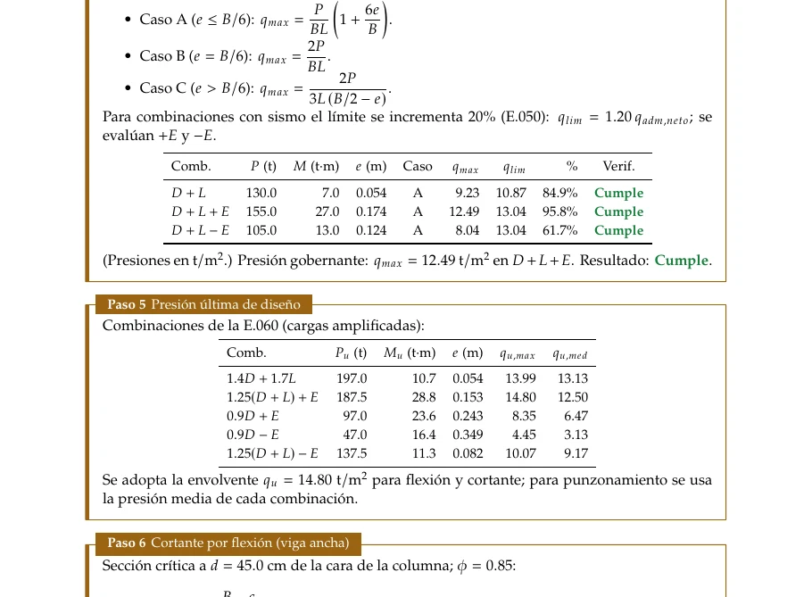
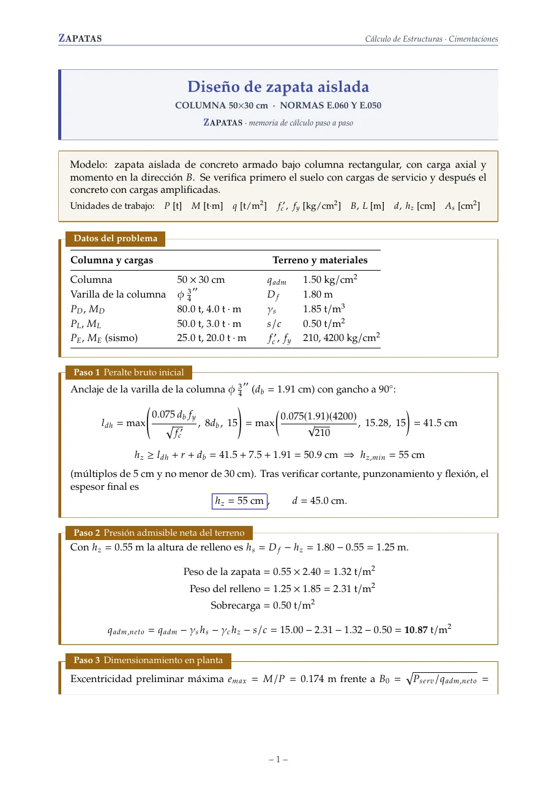
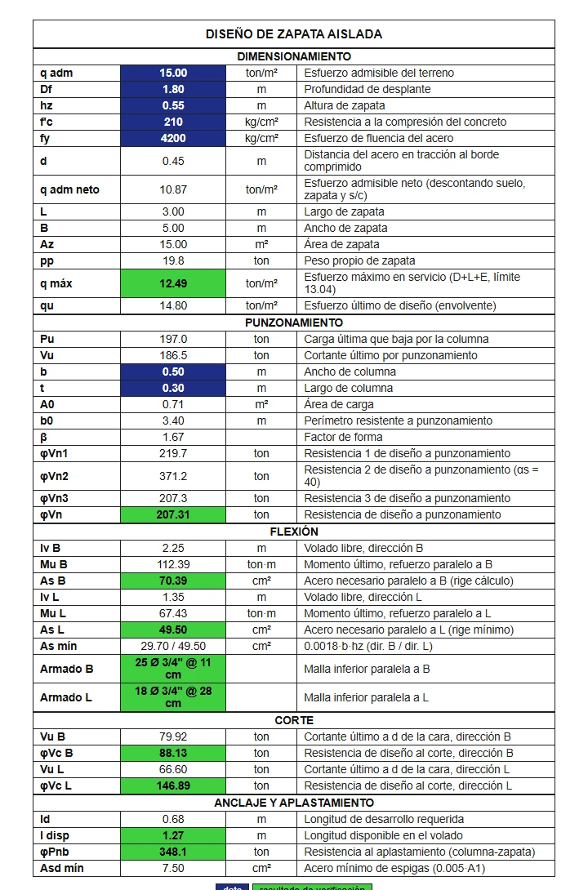
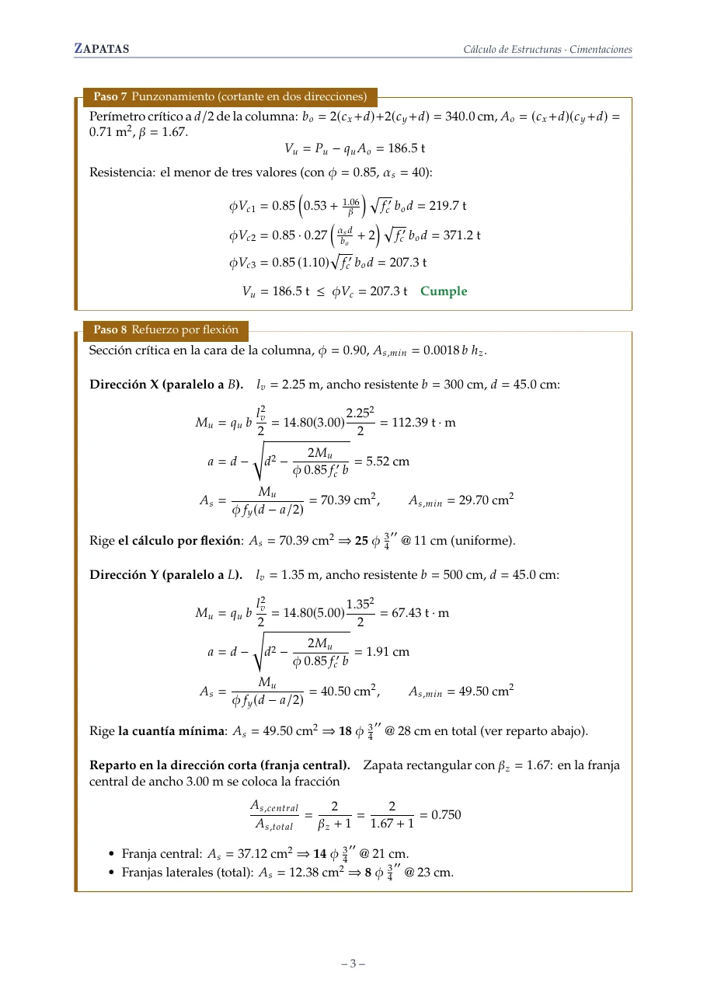
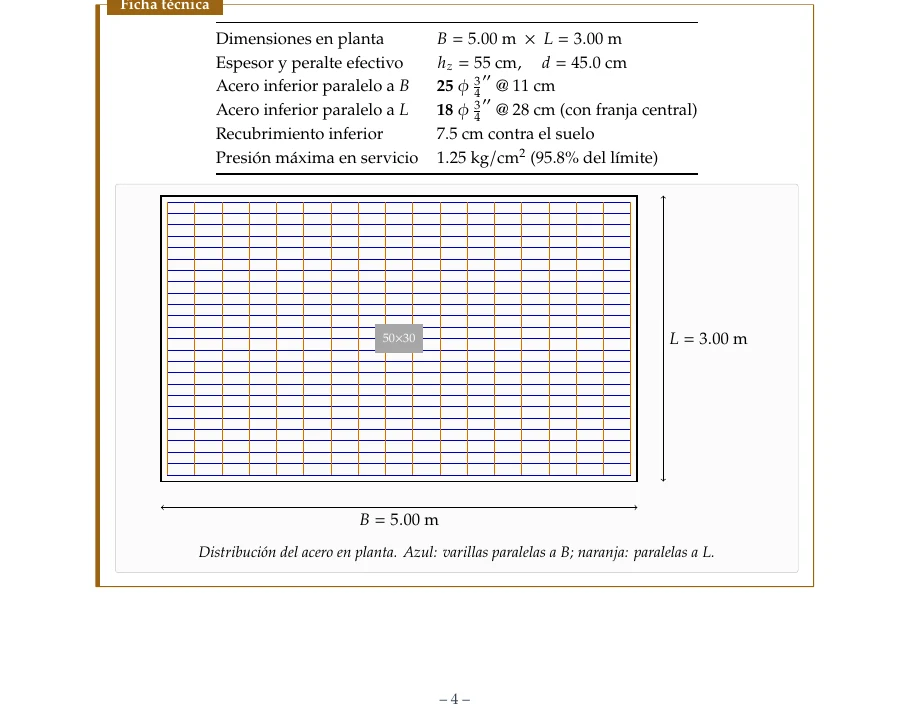
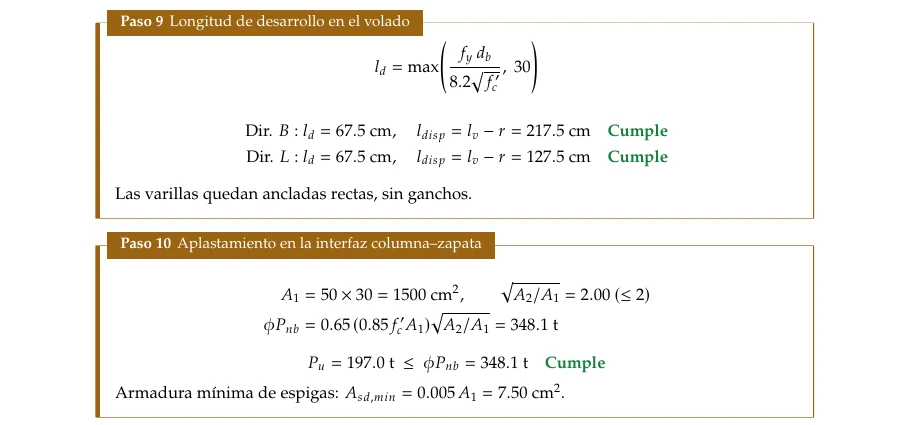

Recibir tus datos
Planos, cargas, estudio de suelos y plazo de la obra.

10 pasos de la Norma E.060 en cada memoria
Diseño estructural, supervisión de obra y presupuestos. Calcula tu zapata aislada gratis y descarga la memoria en PDF con fórmulas y valores.

Cimentaciones, columnas, vigas y losas según E.030 y E.060.
Control de calidad, cuaderno de obra y valorizaciones.
Calles, carreteras y drenaje superficial.
Redes de agua, alcantarillado y estructuras hidráulicas.
Metrados, análisis de precios y cronograma de obra.
Modelos 3D y revisión de interferencias entre especialidades.

Zapatas aisladas, predimensionado de vigas, dosificación de concreto y pendientes, calculados en tu navegador, sin registro.

Del encargo a la memoria firmada, con cada cálculo a la vista.
Planos, cargas, estudio de suelos y plazo de la obra.

Combinaciones de carga, cortante, punzonamiento y acero.

PDF con fórmulas, valores y ficha técnica para el expediente.

Sobre las calculadoras y los servicios.
La E.060 de concreto armado y la E.050 de suelos. El sismo sigue la combinación 1,25(D+L)±E.
Sí. No piden registro ni pago.
Úsalo como verificación. Un ingeniero colegiado debe revisar y firmar el diseño.
Los 10 pasos con fórmulas y valores, tablas de presiones, ficha técnica y croquis del acero.
No. El cálculo corre en tu navegador; solo el PDF se compila en texlive.net cuando lo pides.
Sí: residencia, supervisión y control de calidad. Escríbeme con la ubicación y el plazo.